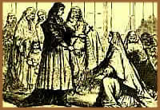
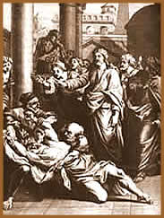
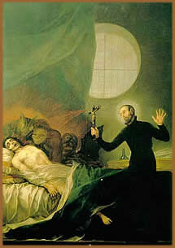

Nas culturas egípcia, babilônica,
assíria e judaica, atribuíam-se certas doenças
e calamidades naturais à ação dos demônios.
Para afastá-los, recorria-se a algum esconjuro ou exorcismo.
A cultura ocidental recebeu essas idéias através
da Bíblia e do cristianismo primitivo.
No cristianismo, exorcismo (do grego exorkismós,
"ato de fazer jurar", pelo latim exorcismu)
é a cerimônia que visa esconjurar os espíritos
maus, forçando-os a deixar os corpos possessos ou
dominar sua influência sobre pessoas, objetos, situações
ou lugares. Quando objetiva a expulsão de demônios,
chama-se Exorcismo Solene e deve fazer-se de acordo com
fórmulas consagradas, que incluem aspersão
de água benta, imposição das mãos,
conjurações, sinais da cruz, recitação
de orações, salmos, cânticos, etc. Além
disso, o ritual católico do exorcismo pode ser executado
por sacerdotes somente quando são expressamente autorizados
por bispos.
Possessões
Possessão é o estado ou condição
em que o corpo e (ou) a mente de um indivíduo são
supostamente possuídos ou dominados por uma entidade (um
ser, força, ou divindade) que lhes é externa, ou
que não se manifesta habitualmente nas atividades da vida
diária.
A possessão, considerada como experiência
de natureza psicológica e social, pode ser verificada individual
ou coletivamente, e ter caráter inesperado, ou estar submetida
a algum tipo de controle ritual; em diversas sociedades e culturas,
figura como episódio ou experiência central da vida
religiosa. Podemos dividir, genericamente, as formas de possessão
em quatro categorias.
Encosto
O espírito fica próximo à
pessoa, mas a influência é pequena. Neste caso, banhos
de água e sal ou orações como o Pai-Nosso
ou o Credo, afastam este espírito inferior. Geralmente
estes espíritos são de pessoas que desencarnaram
e pertencem à família do possuído.
Espírito
opressivo
O espírito tem a capacidade de "vampirizar"
a energia do indivíduo. Os efeitos são sentidos
como um cansaço ou vontade de chorar que podem cessar de
um momento para outro. Indica-se neste caso, que se utilize um
saquinho de cor vermelha, sempre junto ao corpo para neutralizar
a presença deste espírito. Também os banho
de água com sal, são benéficos neste caso.
A leitura do salmo 23 é o mais indicado contra o espírito
opressivo.
Obsessão
O espírito consegue ficar de maneira tão
dominante no corpo astral do indivíduo que pode até
mesmo mudar o modo de falar e fazer coisas que normalmente não
faria no dia-a-dia. Chega até mesmo a não reconhecer
parentes e pessoas próximas de seu convívio. É
bom frisar que aqui no Brasil de acordo com o espiritismo ou nas
religiões afro-brasileiras como a umbanda e candomblé,
existem os fenômenos de possessão de espíritos
doutrinadores e iluminados, trazendo ao médium apenas benefícios.
Possessão
demoníaca
Neste caso, o espírito toma o corpo da pessoa,
fazendo com que ocorram até fenômenos de "poltergeist"
(conjunto de fenômenos produzidos espontaneamente, que consiste
em ruídos e deslocamento de objetos, podendo ter duração
indeterminada).
Exorcismos
na Bíblia
O
Antigo Testamento, embora reconheça a atuação
do demônio a partir da tentação e da queda
de Adão no paraíso, praticamente não alude
a uma ação maléfica direta do diabo sobre
os homens.
Foi no judaísmo antigo que se atribuíram
ao demônio intervenções muito concretas na
vida cotidiana. O Livro de Tobias (século II a.C.),
de influência assíria, narra um exorcismo praticado
mediante a oração e utilização das
vísceras de um peixe.
No Novo Testamento, que não apresenta modificações
essenciais no que se refere ao exorcismo, o Evangelho de Marcos
é o que insiste de maneira mais realista nos exorcismos
praticados por Jesus e por seus discípulos. Em certos casos,
trata-se de expulsar o demônio do corpo de possessos ou
lunáticos. Em outros, da cura de enfermidades atribuídas
à ação do demônio. Os evangelistas
se servem dessas vigorosas ilustrações para demonstrar
a vitória de Jesus sobre Satanás e também
para mostrar como seu povo se libertou do pecado. "Chegou
o momento de ser julgado este mundo, e agora o seu príncipe
será expulso" (João - 12:31). Esses milagres
seriam um sinal da instauração do reino de Deus.
"Se, porém, eu expulso demônios pelo Espírito
de Deus, certamente é chegado o reino de Deus sobre vós"
(Mt - 12:28).
Exorcismos
na história da Igreja
As curas e os exorcismos foram comuns na igreja
primitiva. Com o reconhecimento oficial da Igreja sob o imperador
Constantino, os exorcismos carismáticos, realizados informalmente
por qualquer cristão, deram lugar à institucionalização
da função do exorcista. O Rituale
Romanum reuniu mais tarde, diversos ritos de exorcismos
para situações variadas. Também as igrejas
reformadas estabeleceram tais ritos.
O racionalismo do século XVIII conseguiu
explicar muitos mistérios supostamente sobre-humanos, o
que também sucedeu, de modo ainda mais intenso, com a descoberta
do hipnotismo e da psicologia profunda no século XIX. A
Igreja Católica, como também algumas denominações
protestantes, admite os exorcismos ordinários, contidos
no rito do batismo, como símbolo da libertação
do pecado e do poder do demônio. Pratica-se o exorcismo
ordinário na bênção da água
batismal e na sagração dos santos óleos.
Os exorcismos solenes, que têm por objetivo expulsar o demônio
do corpo de um possuído, são práticas raríssimas
e só confiadas, mediante permissão episcopal, à
sacerdotes muito experientes.
O
exorcismo católico inicia-se com a expressão latina
"Adjure te, spiritus nequissime, per Deum omnipotentem"
(eu te ordeno, espírito maligno, pelo Deus Todo-Poderoso).
O processo pode ser longo e extenuante, chegando a se estender
por vários dias. A possessão está associada
ao mal. O processo de libertação é feito
de forma dramática e violenta. Os exorcistas recorrem as
preces, água-benta, defumadores, essências de rosas
e arruda. O sal que é associado à pureza espiritual
também é utilizado.
Porém, o cristianismo deste século
tem uma atitude dividida em relação ao exorcismo.
Por um lado, mantém distância de sua prática,
atuando mais próximos a psiquiatras e médicos e
autorizando estudos para esclarecer este fenômeno. Mesmo
assim, a Igreja oculta os casos confirmados de possessão
a prática dos rituais de expulsão. Ainda, o Papa
João Paulo II declarou ter aplicado o exorcismo sob uma
jovem, em 1982.
Um relatório sobre exorcismo foi compilado
pela Igreja da Inglaterra, em 1972, por uma comissão que
incluía represen- tantes católicos e um consultor
psiquiatra. Apesar de pretender desbancar as possessões,
acabou fortalecendo esta idéia quando relacionada à
possessão de lugares: "a interferência demoníaca...
é comum em lugares não consagrados... assim como
em conexão com sessões espíritas".
Porém, este relatório considera exorcismos
de pessoas extremamente duvidosos. À luz da Igreja moderna,
aqueles que se julgarem possuídos, devem, prioritariamente,
procurar a ajuda de um médico ou psicólogo. Recorrer
a um sacerdote cristão é considerado último
recurso.
O padre Gabrielle Amorth, diz ter realizado aproximadamente
50.000 exorcismos mas considera que somente 84 foram possessões
autênticas. O sacerdote diz que os sintomas incluem força
física sobre-humana, xenoglossia (a fala espontânea
em língua que não foi previamente aprendida) e revelações
de segredos sobre as pessoas.
O cânone dominicano Walker, de Brighton,
que coordena o Grupo de Estudos do Exorcismo Cristão, lembra
de somente sete casos genuínos durante sua vida religiosa:
"Normalmente, tudo que é preciso são conselhos
e rezas".
O demônio
e o exorcismo nas religiões
Católicos
Satanás, líder da rebelião
dos anjos contra
Deus, é a encarnação do mal que existirá
até o fim dos tempos e contra o qual os cristãos
devem estar sempre vigilantes. Há sinais que distinguem
os endemoninhados, mas a Igreja recomenda que se recorra à
avaliação de psiquiatras para evitar confusões
com casos de histeria e esquizofrenia.
Anglicanos
O demônio pode ser combatido em orações,
hinos e leituras da Bíblia, mas não existe uma cerimônia
específica. Os casos de exorcismo são muito raros.
Quando ocorrem, o possuído é "tratado"
num grupo de orações, que lhe recomenda jejum, abstinência
sexual e adoração a Deus.
Judeus
A literatura rabínica clássica não
prevê a existência do demônio, por isso a religião
não reconhece rituais de exorcismo. Nos séculos
XVI e XVII, surgiu a figura do dibuk, espírito
perverso que podia ser expulso em ritos de oração.
Para a maioria dos judeus, é considerado apenas folclore.
Evangélicos
neopentecostais
Todos os males são causados pelo demônio.
Há tipos de possessão que estragam a vida amorosa,
provocam miséria, perturbam a família. Nos cultos,
os endemoninhados são conduzidos ao altar. O pastor grita
com Satanás e exige que abandone o corpo em nome de Jesus.
(Fonte: Revista Época)